时间线
日、月、年三档粒度，双指捏合直接切换；长按进入多选，也能一路划选。
HARMONYOS · 飞牛 NAS · 非官方客户端
飞马相册是面向 HarmonyOS 的飞牛相册客户端。按时间翻照片，看 HDR 和实况，也能把手机里新拍的内容备份回 NAS。照片留在你自己的设备上，不经过开发者的服务器。
也可在应用市场搜索 FMphoto，包名 com.jonas.fmphoto。
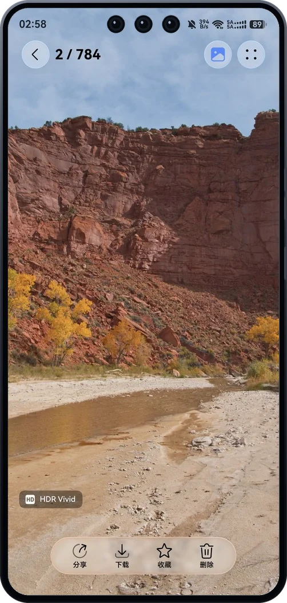
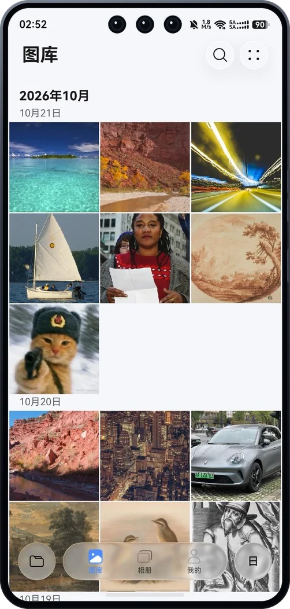
界面
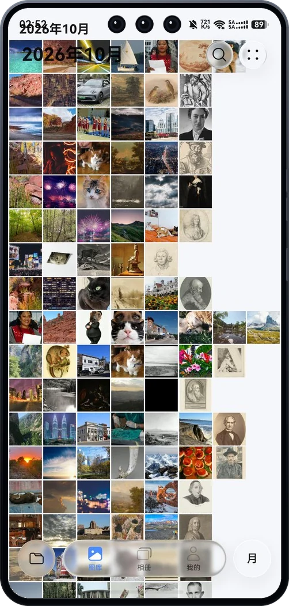
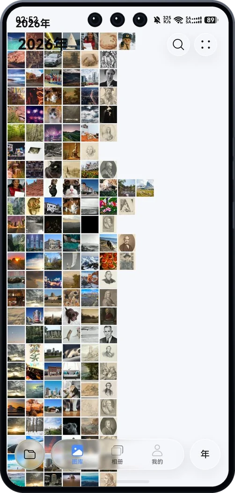
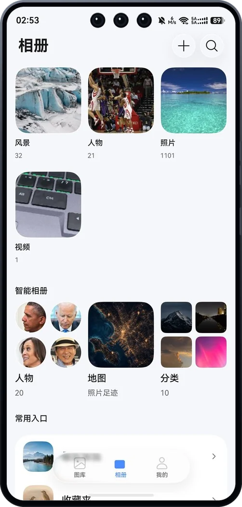
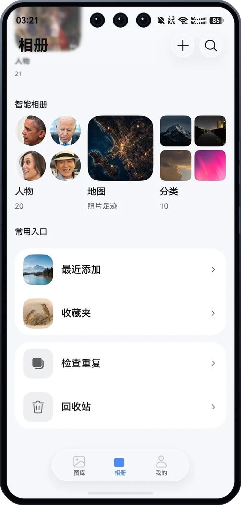
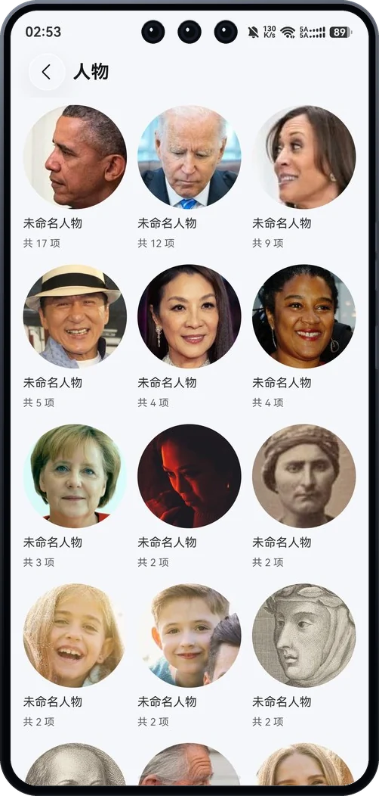
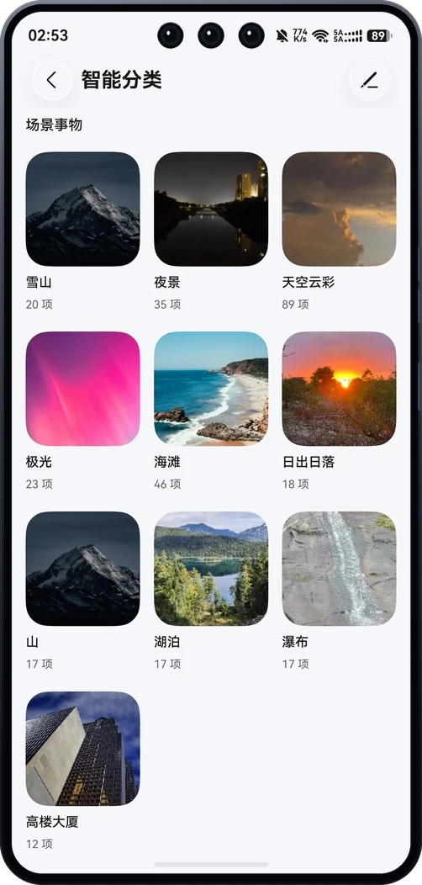
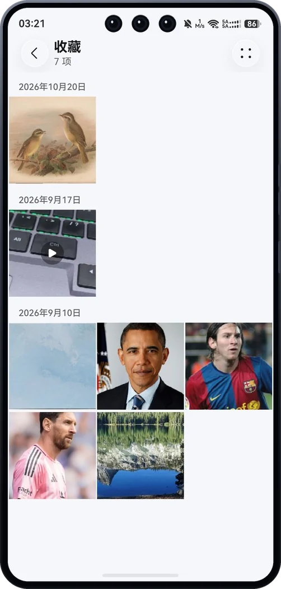
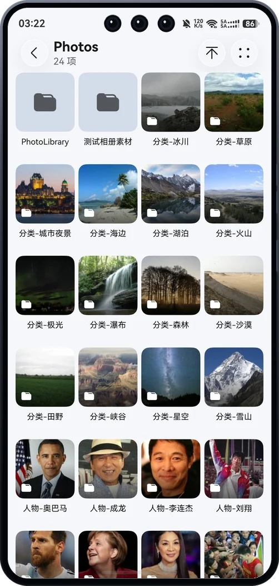
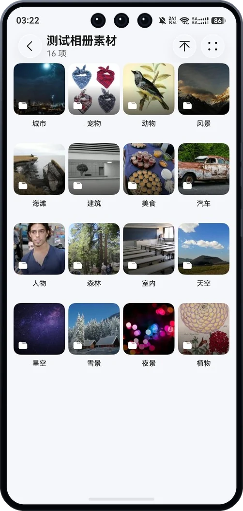
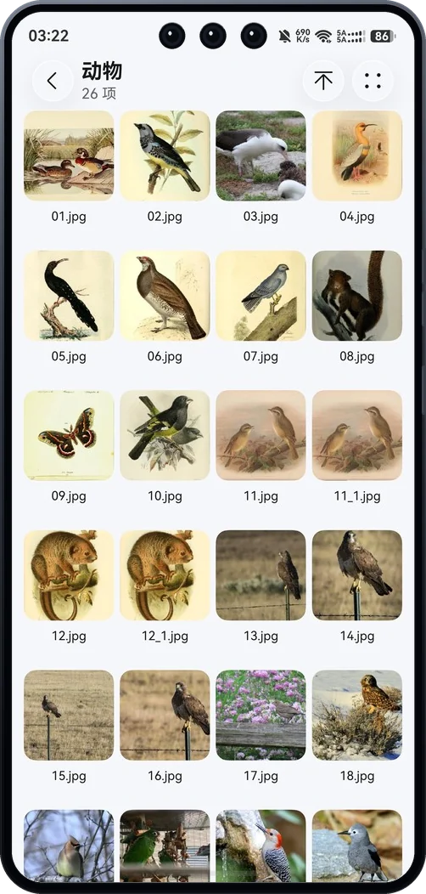
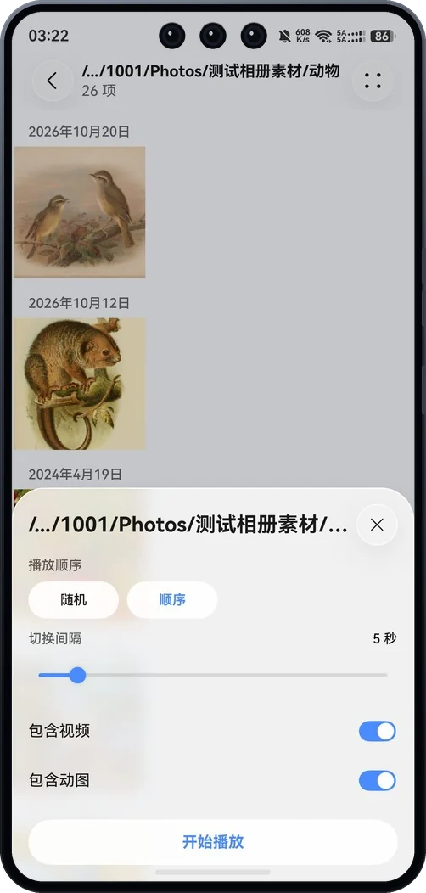
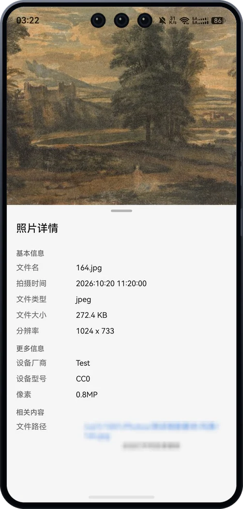
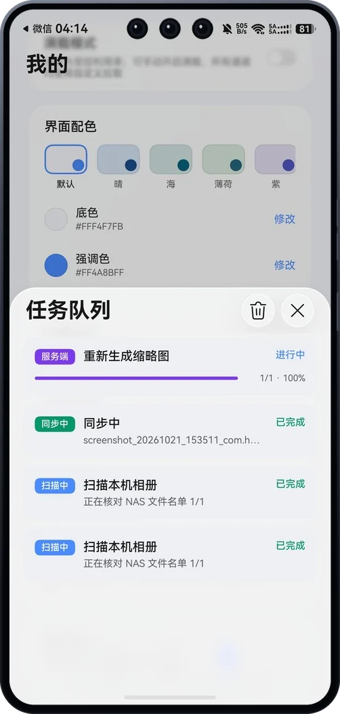
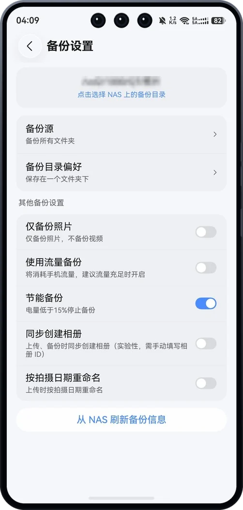
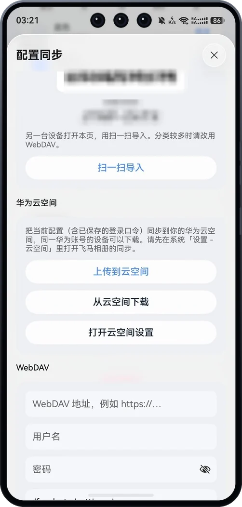
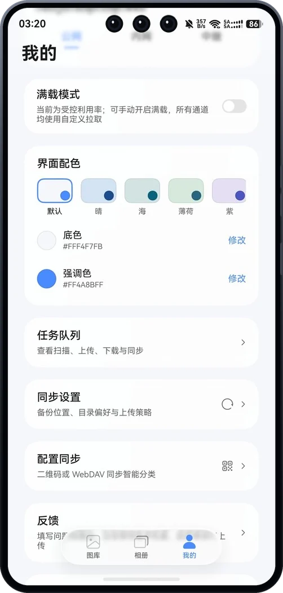
能力
照片始终只在你和你的 NAS 之间。下面这些不是规划，是当前版本已经能用的部分。
日、月、年三档粒度，双指捏合直接切换；长按进入多选，也能一路划选。
原图按 HDR 解码，画面角上标出 HDR Vivid；安卓、鸿蒙、iOS 的实况都能播放，也能存成系统动态照片。
从宫格点开，位置和大小连续过渡到全屏；没放大时上滑看详情、下滑退出，视频边看边预取。
AI 搜索、智能分类、人物相册，还有按拍摄地点汇总的照片足迹。能力取决于 NAS 侧是否开通。
内网、公网、飞牛官方中继三路并行探测；中继只在前两者都不通时兜底，登录后也能手动切换。
内网自动吃满带宽；公网与中继默认限制利用率，需要时临时打开，应用退出就恢复原状。
对齐飞牛官方指纹（文件名、大小、修改时间），本机账本与 NAS 全库索引双重比对；实况按同名判定，不会重复上传。
上传、下载、收藏、删除、回收站、批量操作与幻灯片；传输队列里每条任务的进度都看得见。
换机时用二维码、WebDAV 或华为云空间带走配置；五套预设配色，也能自定义底色与强调色。
上手
填写 NAS 地址或 FN ID，以及飞牛账号。地址和密码只留在你的手机和 NAS 之间。
相册、搜索或人物如果是空的，先到 NAS 上确认对应服务和权限已经打开。
小贴士
长按「原图」按钮，之后翻页都按原图加载；再长按一次解除。
长按视频画面，临时以 2 倍速播放；松手回到原来的倍速。
长按底栏的倍速或清晰度按钮锁定当前档位，切换视频时继续沿用；再长按解除。
在相册页长按相册卡片，拖动即可调整顺序。
长按一张缩略图后不要松手，直接滑过要选的照片；拖到屏幕边缘会自动滚动。
备份和自动同步由个人开发者维护，没法做完备测试。请不要把唯一的一份照片交给本应用管理，重要内容请另行保留。
飞马相册不包含广告，也不把照片发到开发者的服务器。若使用 FN ID，地址解析会经过飞牛的连接服务。